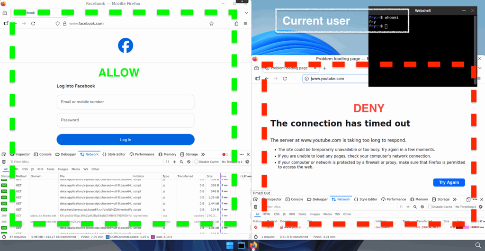
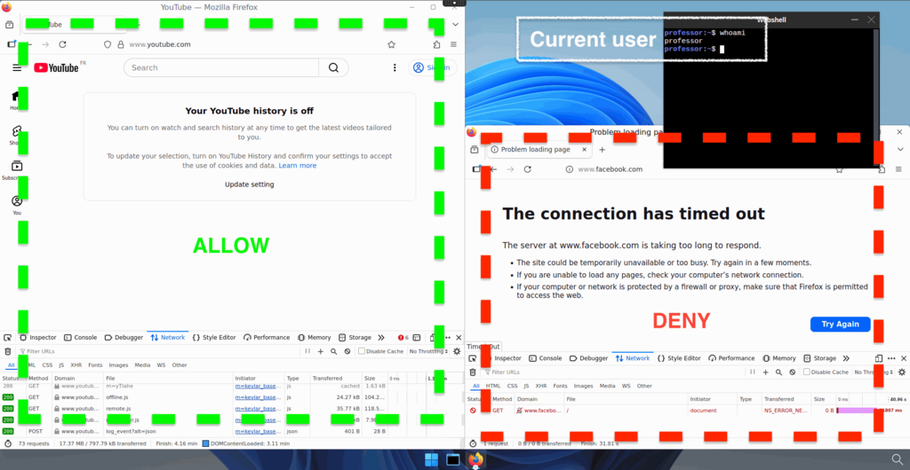

Filter traffic based on user's groups
Prerequisites
- a Kubernetes cluster with abcdesktop installed
- use cilium as network provider for your cluster
- An authentication provider with groups support (
LDAP,ActiveDirectoryorOAuth), see authentication section for more details. By default the docker-test-openldap provides groups support.
Note
In this example, we will use docker-test-openldap which is a LDAP service
Use case description
As an organistaion, you may have several departments, such as sales, accounting, IT, etc. And you may want to control access based on department. For exemple, an IT employee shouldn't have access to accounting documents.
With abcdesktop, you can meet these kind of needs by creating rules bases on the groups to which users belong.
---
config:
theme: redux-color
---
sequenceDiagram
actor Philip
Philip->>Router: Logme in (Philip, password)
Router->>Pyos: Logme in (Philip, password)
Note over Router,Pyos: 1. Authentication
Create participant LDAP
Pyos->>LDAP: BIND LDAP_SEARCH Philip
destroy LDAP
LDAP->>Pyos: dn, cn, group=shipcrew
Note right of Kubernetes: Cilium Policy
Pyos->>Kubernetes: (option) Create user secrets
Kubernetes->>Pyos: (option) Secrets created
Pyos->>Router: User Philip JWT
Router->>Philip: User Philip JWT
Philip->>Router: Create Desktop (User Philip JWT)
Note over Router,Pyos: 2. Create a desktop
Router->>Pyos: Create Desktop (User Philip JWT)
Pyos->>Kubernetes: Create Philip POD YAML
Kubernetes->>Pyos: POD Created
Create participant PodPhilip
Note right of PodPhilip: shipcrew=true
Kubernetes->>PodPhilip:
destroy Kubernetes
Kubernetes->>Pyos: Philip Pod is Ready
destroy Pyos
Pyos->>Router: Desktop Philip JWT
Router->>Philip: Desktop Philip JWT
Router->>Philip: Connected
Create participant Facebook
PodPhilip->>Facebook: Access Granted #10004;
destroy Facebook
Facebook->>PodPhilip: OK
Philip-->PodPhilip: Established
Create participant Youtube
PodPhilip--xYoutube: Drop #10006;How does abcdesktop manage groups
Let's assume that the users present your authentication system are already affected to groups. In our example, we have Philip J. Fry a.k.a. fry, and Hubert J. Farnsworth a.k.a. professor, respectively members of ship_crew and admin_staff groups (cf https://github.com/rroemhild/docker-test-openldap).
Once authenticated, abcdesktop control plane reads the user's infos, and will create the user's pod with its groups specified as labels.
kubectl get pods -n abcdesktop
NAME READY STATUS RESTARTS AGE
console-od-7f548d74fd-48rpv 1/1 Running 0 2d19h
fry-3c9e8 3/3 Running 0 45h
memcached-od-796c455cd-hqhlb 1/1 Running 0 2d19h
mongodb-od-0 2/2 Running 0 2d19h
nginx-od-6657dd8c9-c979g 1/1 Running 0 2d19h
openldap-od-6f4797f9d-86jdd 1/1 Running 0 2d1h
professor-0ecf4 3/3 Running 0 44h
pyos-od-68776fb486-69x5q 1/1 Running 0 2d
router-od-867f5576dd-p9hj5 1/1 Running 0 2d19h
speedtest-od-78cdbdd9c6-vphfl 1/1 Running 0 2d19h
Run a describe pod command on both user pod to check if the group label is present.
show details
kubectl describe pod fry-3c9e8 -n abcdesktop
[...]
Labels: abcdesktop/role=desktop
access_provider=planet
access_providertype=ldap
access_userid=fry
access_username=philip-j.-fry
broadcast_cookie=202f5459d1a35e54d149b75795f269796cdd78c520e4e412
cn-ship_crew-ou-people-dc-planetexpress-dc-com=
ipsource=10.0.2.216
labeltrue=true
netpol/ocuser=true
pulseaudio_cookie=8d8cec68f8647887efdcd1bddb09db6a
service_broadcast=29784
service_ephemeral_container=enabled
service_filer=29783
service_graphical=6081
service_init=enabled
service_pod_application=enabled
service_printerfile=29782
service_sound=29788
service_spawner=29786
service_webshell=29781
shipcrew=true
type=x11server
xauthkey=2d1afb247f156987dc65ae72bcc0f4
[...]
kubectl describe pod professor-0ecf4 -n abcdesktop
[...]
Labels: abcdesktop/role=desktop
access_provider=planet
access_providertype=ldap
access_userid=professor
access_username=hubert-j.-farnsworth
adminstaff=true
broadcast_cookie=315066f64d9c59b70ce5f0c7d86f10079b01a78cce44d8c7
cn-admin_staff-ou-people-dc-planetexpress-dc-com=
ipsource=10.0.1.22
labeltrue=true
netpol/ocuser=true
pulseaudio_cookie=b8c096a27cad70c114ed81ab4c4da3a1
service_broadcast=29784
service_ephemeral_container=enabled
service_filer=29783
service_graphical=6081
service_init=enabled
service_pod_application=enabled
service_printerfile=29782
service_sound=29788
service_spawner=29786
service_webshell=29781
type=x11server
xauthkey=f7e335f429be8bd8e82c48df775fb0
[...]
You should see labels shipcrew=true for fry and adminstaff=true for professor
Create access rules based on groups
To monitor pods incoming (ingress) and outgoing (egress) traffic in Kubernetes, we ordinarily use NetworkPolicies. But network policies does not offer the possibility to filter based on FQDNs, you can only filter by IPs. So that means, if the service you want to grant access to has more than one IP, you need to specify all IPs in the filter, it becomes even worse if it has dynamic IPs that are constantly changing.
This is why we use cilium as network provider for our cluster, so that we can apply CiliumNetworkPolicies. Those are very similar to the standard network policies but provides fuctionalites that are not yet supported, like DNS based rules.
Warning
It is important to keep in mind that CiliumNetworkPolicies operates on a whitelist basis. That means that once an egress rule is applied, everything that is not clearly indicate as authorized is forbidden.
In our example, we will allow users from the shipcrew group to access Facebook, and users from the adminstaff group to access Youtube.
First create a file called netpol-allow-facebook-shipcrew.yaml and paste the following content
apiVersion: cilium.io/v2
kind: CiliumNetworkPolicy
metadata:
name: allow-facebook-shipcrew
namespace: abcdesktop
spec:
endpointSelector:
matchLabels:
shipcrew: "true" # Selector based on group label
egress:
- toEndpoints:
# Allow all DNS resolutions
- matchLabels:
"k8s:io.kubernetes.pod.namespace": kube-system
"k8s:k8s-app": kube-dns
toPorts:
- ports:
- port: "53"
protocol: ANY
rules:
dns:
- matchPattern: "*"
- toFQDNs:
# Add here all the FQDN patterns you want to grant access to
- matchPattern: "*.facebook.com"
- matchPattern: "*.xx.fbcdn.net"
toPorts:
- ports:
- port: "80"
protocol: TCP
- port: "443"
protocol: TCP
Save and apply it by running the following command
kubectl apply -f netpol-allow-facebook-shipcrew.yaml -n abcdesktop
ciliumnetworkpolicy.cilium.io/allow-facebook-shipcrew configured
Now you can check if the policy exists by running this command
kubectl get ciliumnetworkpolicy -n abcdesktop
NAME AGE
allow-facebook-shipcrew 27h
Your pod should now have access to Facebook and nothing else

Now create a file called netpol-allow-youtube-adminstaff.yaml and paste the following content
apiVersion: cilium.io/v2
kind: CiliumNetworkPolicy
metadata:
name: allow-youtube-adminstaff
namespace: abcdesktop
spec:
endpointSelector:
matchLabels:
adminstaff: "true" # Selector based on group label
egress:
- toEndpoints:
# Allow all DNS resolutions
- matchLabels:
"k8s:io.kubernetes.pod.namespace": kube-system
"k8s:k8s-app": kube-dns
toPorts:
- ports:
- port: "53"
protocol: ANY
rules:
dns:
- matchPattern: "*"
- toFQDNs:
# Add here all the FQDN patterns you want to grant access to
- matchPattern: "*.youtube.com"
toPorts:
- ports:
- port: "80"
protocol: TCP
- port: "443"
protocol: TCP
Save and apply it by running the following command
kubectl apply -f netpol-allow-youtube-adminstaff.yaml -n abcdesktop
ciliumnetworkpolicy.cilium.io/allow-youtube-adminstaff configured
Now you can check if the policy exists by running this command
kubectl get ciliumnetworkpolicy -n abcdesktop
NAME AGE
allow-facebook-shipcrew 27h
allow-youtube-adminstaff 27h
Your pod should now have access to Youtube and nothing else

Great ! Now you can manage your organization's network access based on user groups.